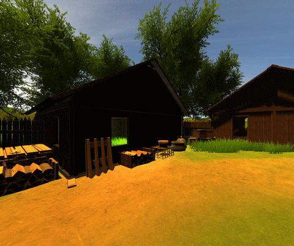
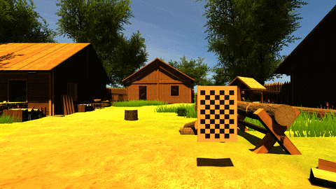

REU Internship 2017
Vast Challange

The Visual Analytics Science and Technology ( VAST) Challenge is an annual contest with the goal of advancing the field of visual analytics through competition.

SENSEI Project

Helped working on the SENSEI Project, where Dimitar Kirilov and I were tasked to create camera designs along with scenes (in Unity3D and Blender), which would later take images, that can be used to test stiching algorithms that are designed for the SENSEI project. The project was done under the supervision of Dan Sandin. For visual confirmation that the stiching is correct, the results were put into the Cave 2, since the large/high-definition displays made it easier to spot any inconsistencies.
Sensei project gallery
Unity 3D
 
Stiching results


UIC Coursework
Unity3D Game ( CS 426 )
Done as a part of a Video Game Design course, which focused on making games that implement good level design, physics, lightning, which were made better over time by having the games Alpha/Beta tested. Worked in a group of 3, consisted of me, Konrad Biegaj, and Louis Ludkowski. The video below has commentary which goes more in-depth about the game.
Arduino RC Car ( CS 361 )
As a final project for CS 361 Siddharth Basu and I decided to re-make the brains of an RC car from scratch. We wanted to stay away from buying kits, pre-made remotes/motor-boards that already had everything set up for us. I took the task of making the actual RC car while Sid worked on the remote controls. For more information, feel free to read the final writeup about the project.

Remote controlled car gallery
.jpg)
.jpg)
.jpg)
.jpg)
.jpg)
Stella ( CS 342 )
Stella gallery